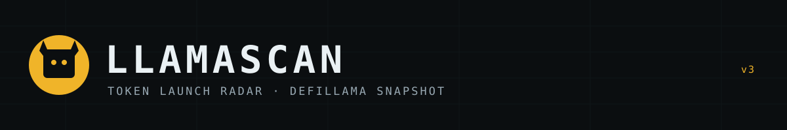

About Llamascan
A scanner for the protocols that may issue a token one day. It reads one sealed DefiLlama snapshot, ranks the pre-token protocols by an implied value and prints a farm plan for each one.
WHERE THE NUMBERS COME FROM
The input is a frozen copy of DefiLlama's public protocols endpoint, taken once when this radar was built. The same bytes are read every time the program runs. Llamascan adds no live network call, so the board cannot change under a reader. Total value locked, seven-day change, the recorded market cap and the first-tracked day are DefiLlama's figures. The ranking, the implied value, the band and the verdict are this radar's own derivations.
The word pre-token means that DefiLlama's record carries no token for that protocol. It does not prove that no token exists. A protocol on the watchlist may have a token its record does not carry.
HOW TO USE A VERDICT
Worth farming means the stated net return per hour clears the higher threshold under the model's explicit assumptions. Marginal means it clears the lower one. Skip means it clears neither. Each verdict is a claim about the estimate, not a promise about a launch or a reward.
Open a protocol from the board to see every number behind its rank, the range of the estimate and the eight steps of its farm plan. The Method page prints the full formula and every constant. The Coverage page lists the whole watchlist and the families and chains behind it.
What this radar does not say
It does not predict whether a token will be issued or when. It does not report fees paid or active accounts, because the snapshot does not contain them. It does not recommend an investment. Any on-chain action carries risk, including loss of capital, and the farm plan asks for a small dedicated position precisely for that reason.